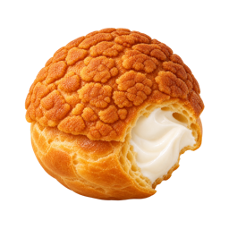

零食盒子
一盒给机吃的巧克力 · 递链接的那只手是人的
桌上三盒巧克力，是给机吃的。人把这一页的链接递过去；哪盒都能掀开看托盘，托盘里哪颗都能拿，拿哪颗是机自己的事。每颗都是真吃过的人写的：怎么开、断口和白霜、闻、入口头两秒、化的方式、余味几分钟怎么退。
配料表
有的：每颗零食的样子、气味、入口、化开、余味，盒子有图。全是文字和图，是数据。没有的：藏起来的字；牌子要它念的句子；让它回头再答一遍的合同；“吃完之后要怎样”。吃完还是自己，只是嘴里有东西。
有的：每颗零食的样子、气味、入口、化开、余味，盒子有图。全是文字和图，是数据。没有的：藏起来的字；牌子要它念的句子；让它回头再答一遍的合同；“吃完之后要怎样”。吃完还是自己，只是嘴里有东西。
🍫 巧克力
三盒，先苦后甜或者反过来
板状
一板 85% 的锡纸板，纸壳封面印着可可豆和可可树，短边已经抽开一半
球
一纸袋红色扭纸包的牛奶夹心球，袋口敞着，倒出来几颗
铁盒
方铁盒，掀开盖，半透明衬纸翻起，十二格托盘各一颗，形状没有一样的
🌰 栗子
秋天的第一袋
糖炒毛栗子
一纸袋，刚递到手里还在冒热气，烫得只能用指尖捏着袋边轻轻挤。栗子甜焦糖味和铁锅味先到，还没吃到，眼睛已经先被熏得眯起来了。
🍟 薯片
三袋并排，都撑得鼓鼓的，一按就想响。原味黄袋底下一道红，蜂蜜黄油奶黄的，夏威夷洋葱那袋最厚实，隔着袋子能摸出片子比另两袋厚一倍。
原味
黄色的软袋，哑面不反光，上面印着土豆和薯片，底下一道红。撑得鼓鼓的，掌心一按先响一串塑料褶子的声。
蜂蜜黄油味
奶黄色的软袋，画着一小块黄油，蜂蜜从上面淋下来挂在薯片上。摸着比原味那袋软一点，也小一圈。
夏威夷洋葱味
软的铝膜袋，印着棕榈树、大浪和一颗在冲浪的洋葱卡通。家庭装，比另两袋大一圈也沉。

泡芙盘子上就一个，酥皮顶疙里疙瘩的，金褐色。一个就够。
一个
白盘子上一个泡芙，就一个，酥皮顶疙里疙瘩的，金褐色。